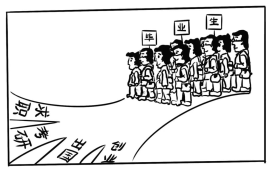

2013 年全国硕士研究生招生考试英语（一）
Section I Use of English
Directions:
Read the following text. Choose the best word(s) for each numbered blank and mark A, B, C or D on the ANSWER SHEET. (10 points)
People are, on the whole, poor at considering background information when making individual decisions. At first glance this might seem like a strength that 1 the ability to make judgments which are unbiased by 2 factors. But Dr. Uri Simonsohn speculated that an inability to consider the big 3 was leading decision-makers to be biased by the daily samples of information they were working with. 4 , he theorised that a judge 5 of appearing too soft 6 crime might be more likely to send someone to prison 7 he had already sentenced five or six other defendants only to forced community service on that day.
To 8 this idea, he turned to the university-admissions process. In theory, the 9 of an applicant should not depend on the few others 10 randomly for interview during the same day, but Dr. Simonsohn suspected the truth was 11 .
He studied the results of 9,323 MBA interviews 12 by 31 admissions officers. The interviewers had 13 applicants on a scale of one to five. This scale 14 numerous factors into consideration. The scores were 15 used in conjunction with an applicant’s score on the Graduate Management Admission Test, or GMAT, a standardised exam which is 16 out of 800 points, to make a decision on whether to accept him or her.
Dr. Simonsohn found if the score of the previous candidate in a daily series of interviewees was 0.75 points or more higher than that of the one 17 that, then the score for the next applicant would 18 by an average of 0.075 points. This might sound small, but to 19 the effects of such a decrease a candidate would need 30 more GMAT points than would otherwise have been 20 .
Section II Reading Comprehension
Part A
Directions:
Read the following four texts. Answer the questions below each text by choosing A, B, C or D. Mark your answers on the ANSWER SHEET. (40 points)
Text 1
In the 2006 film version of The Devil Wears Prada, Miranda Priestly, played by Meryl Streep, scolds her unattractive assistant for imagining that high fashion doesn’t affect her. Priestly explains how the deep blue color of the assistant’s sweater descended over the years from fashion shows to department stores and to the bargain bin in which the poor girl doubtless found her garment.
This top-down conception of the fashion business couldn’t be more out of date or at odds with the feverish world described in Overdressed, Elizabeth Cline’s three-year indictment of “fast fashion.” In the last decade or so, advances in technology have allowed mass-market labels such as Zara, H&M, and Uniqlo to react to trends more quickly and anticipate demand more precisely. Quicker turnarounds mean less wasted inventory, more frequent releases, and more profit. These labels encourage style-conscious consumers to see clothes as disposable — meant to last only a wash or two, although they don’t advertise that — and to renew their wardrobe every few weeks. By offering on-trend items at dirt-cheap prices, Cline argues, these brands have hijacked fashion cycles, shaking an industry long accustomed to a seasonal pace.
The victims of this revolution, of course, are not limited to designers. For H&M to offer a $5.95 knit miniskirt in all its 2,300-plus stores around the world, it must rely on low-wage overseas labor, order in volumes that strain natural resources, and use massive amounts of harmful chemicals.
Overdressed is the fashion world’s answer to consumer-activist bestsellers like Michael Pollan’s The Omnivore’s Dilemma. “Mass-produced clothing, like fast food, fills a hunger and need, yet is non-durable and wasteful,” Cline argues. Americans, she finds, buy roughly 20 billion garments a year — about 64 items per person — and no matter how much they give away, this excess leads to waste.
Towards the end of Overdressed, Cline introduced her ideal, a Brooklyn woman named Sarah Kate Beaumont, who since 2008 has made all of her own clothes — and beautifully. But as Cline is the first to note, it took Beaumont decades to perfect her craft; her example can’t be knocked off.
Though several fast-fashion companies have made efforts to curb their impact on labor and the environment — including H&M, with its green Conscious Collection line — Cline believes lasting change can only be effected by the customer. She exhibits the idealism common to many advocates of sustainability, be it in food or in energy.
Vanity is a constant; people will only start shopping more sustainably when they can’t afford not to.
21. Priestly criticizes her assistant for her ____
22. According to Cline, mass-market labels urge consumers to ____
23. The word “indictment” (Para. 2) is closest in meaning to ____
24. Which of the following can be inferred from the last paragraph?
25. What is the subject of the text?
Text 2
An old saying has it that half of all advertising budgets are wasted — the trouble is, no one knows which half. In the internet age, at least in theory, this fraction can be much reduced. By watching what people search for, click on and say online, companies can aim “behavioural” ads at those most likely to buy.
In the past couple of weeks a quarrel has illustrated the value to advertisers of such fine-grained information: Should advertisers assume that people are happy to be tracked and sent behavioural ads? Or should they have explicit permission?
In December 2010 America’s Federal Trade Commission (FTC) proposed adding a “do not track” (DNT) option to internet browsers, so that users could tell advertisers that they did not want to be followed. Microsoft’s Internet Explorer and Apple’s Safari both offer DNT; Google’s Chrome is due to do so this year. In February the FTC and Digital Advertising Alliance (DAA) agreed that the industry would get cracking on responding to DNT requests.
On May 31st Microsoft set off the row. It said that Internet Explorer 10, the version due to appear with Windows 8, would have DNT as a default.
Advertisers are horrified. Human nature being what it is, most people stick with default settings. Few switch DNT on now, but if tracking is off it will stay off. Bob Liodice, the chief executive of the Association of National Advertisers, says consumers will be worse off if the industry cannot collect information about their preferences. People will not get fewer ads, he says. “They’ll get less meaningful, less targeted ads.”
It is not yet clear how advertisers will respond. Getting a DNT signal does not oblige anyone to stop tracking, although some companies have promised to do so. Unable to tell whether someone really objects to behavioural ads or whether they are sticking with Microsoft’s default, some may ignore a DNT signal and press on anyway.
Also unclear is why Microsoft has gone it alone. After all, it has an ad business too, which it says will comply with DNT requests, though it is still working out how. If it is trying to upset Google, which relies almost wholly on advertising, it has chosen an indirect method: there is no guarantee that DNT by default will become the norm. DNT does not seem an obviously huge selling point for Windows 8 — though the firm has compared some of its other products favourably with Google’s on that count before. Brendon Lynch, Microsoft’s chief privacy officer, blogged: “We believe consumers should have more control.” Could it really be that simple?
26. It is suggested in Paragraph 1 that “behavioural” ads help advertisers to ____
27. “the industry” (Para. 3) refers to ____
28. Bob Liodice holds that setting DNT as a default ____
29. Which of the following is true according to Paragraph 6?
30. The author’s attitude towards what Brendon Lynch said in his blog is one of ____
Text 3
Up until a few decades ago, our visions of the future were largely — though by no means uniformly — glowingly positive. Science and technology would cure all the ills of humanity, leading to lives of fulfilment and opportunity for all.
Now utopia has grown unfashionable, as we have gained a deeper appreciation of the range of threats facing us, from asteroid strike to epidemic flu and to climate change. You might even be tempted to assume that humanity has little future to look forward to.
But such gloominess is misplaced. The fossil record shows that many species have endured for millions of years — so why shouldn’t we? Take a broader look at our species’ place in the universe, and it becomes clear that we have an excellent chance of surviving for tens, if not hundreds, of thousands of years. Look up Homo sapiens in the “Red List” of threatened species of the International Union for the Conservation of Nature (IUCN) and you will read: “Listed as Least Concern as the species is very widely distributed, adaptable, currently increasing, and there are no major threats resulting in an overall population decline.”
So what does our deep future hold? A growing number of researchers and organisations are now thinking seriously about that question. For example, the Long Now Foundation has as its flagship project a mechanical clock that is designed to still be marking time thousands of years hence.
Perhaps willfully, it may be easier to think about such lengthy timescales than about the more immediate future. The potential evolution of today’s technology, and its social consequences, is dazzlingly complicated, and it’s perhaps best left to science fiction writers and futurologists to explore the many possibilities we can envisage. That’s one reason why we have launched Arc, a new publication dedicated to the near future.
But take a longer view and there is a surprising amount that we can say with considerable assurance. As so often, the past holds the key to the future: we have now identified enough of the long-term patterns shaping the history of the planet, and our species, to make evidence-based forecasts about the situations in which our descendants will find themselves.
This long perspective makes the pessimistic view of our prospects seem more likely to be a passing fad. To be sure, the future is not all rosy. But we are now knowledgeable enough to reduce many of the risks that threatened the existence of earlier humans, and to improve the lot of those to come.
31. Our vision of the future used to be inspired by ____
32. The IUCN’s “Red List” suggests that human beings are ____
33. Which of the following is true according to Paragraph 5?
34. To ensure the future of mankind, it is crucial to ____
35. Which of the following would be the best title for the text?
Text 4
On a five to three vote, the Supreme Court knocked out much of Arizona’s immigration law Monday — a modest policy victory for the Obama Administration. But on the more important matter of the Constitution, the decision was an 8-0 defeat for the Administration’s effort to upset the balance of power between the federal government and the states.
In Arizona v. United States, the majority overturned three of the four contested provisions of Arizona’s controversial plan to have state and local police enforce federal immigration law. The Constitutional principles that Washington alone has the power to “establish a uniform Rule of Naturalization” and that federal laws precede state laws are noncontroversial. Arizona had attempted to fashion state policies that ran parallel to the existing federal ones.
Justice Anthony Kennedy, joined by Chief Justice John Roberts and the Court’s liberals, ruled that the state flew too close to the federal sun. On the overturned provisions the majority held that Congress had deliberately “occupied the field,” and Arizona had thus intruded on the federal’s privileged powers.
However, the Justices said that Arizona police would be allowed to verify the legal status of people who come in contact with law enforcement. That’s because Congress has always envisioned joint federal-state immigration enforcement and explicitly encourages state officers to share information and cooperate with federal colleagues.
Two of the three objecting Justices — Samuel Alito and Clarence Thomas — agreed with this Constitutional logic but disagreed about which Arizona rules conflicted with the federal statute. The only major objection came from Justice Antonin Scalia, who offered an even more robust defense of state privileges going back to the Alien and Sedition Acts.
The 8-0 objection to President Obama turns on what Justice Samuel Alito describes in his objection as “a shocking assertion of federal executive power.” The White House argued that Arizona’s laws conflicted with its enforcement priorities, even if state laws complied with federal statutes to the letter. In effect, the White House claimed that it could invalidate any otherwise legitimate state law that it disagrees with.
Some powers do belong exclusively to the federal government, and control of citizenship and the borders is among them. But if Congress wanted to prevent states from using their own resources to check immigration status, it could. It never did so. The
Administration was in essence asserting that because it didn’t want to carry out Congress’s immigration wishes, no state should be allowed to do so either. Every Justice rightly rejected this remarkable claim.
36. Three provisions of Arizona’s plan were overturned because they ____
37. On which of the following did the Justices agree, according to Paragraph 4?
38. It can be inferred from Paragraph 5 that the Alien and Sedition Acts ____
39. The White House claims that its power of enforcement ____
40. What can be learned from the last paragraph?
Part B
Directions:
In the following text, some sentences have been removed. For Questions 41-45, choose the most suitable one from the list A-G to fit into each of the numbered blanks. There are two extra choices, which do not fit in any of the blanks. Mark your answers on the ANSWER SHEET. (10 points)
The social sciences are flourishing. As of 2005, there were almost half a million professional social scientists from all fields in the world, working both inside and outside academia. According to the World Social Science Report 2010, the number of social-science students worldwide has swollen by about 11% every year since 2000.
Yet this enormous resource is not contributing enough to today’s global challenges, including climate change, security, sustainable development and health. (41) ________ __________________________ Humanity has the necessary agro-technological tools to eradicate hunger, from genetically engineered crops to artificial fertilizers. Here, too, the problems are social: the organization and distribution of food, wealth and prosperity.
(42) ____________________________________ This is a shame — the community should be grasping the opportunity to raise its influence in the real world. To paraphrase the great social scientist Joseph Schumpeter: there is no radical innovation without creative destruction.
Today, the social sciences are largely focused on disciplinary problems and internal scholarly debates, rather than on topics with external impact. Analyses reveal that the number of papers including the keywords “environmental change” or “climate change” has increased rapidly since 2004. (43) _______________________________________
When social scientists do tackle practical issues, their scope is often local: Belgium is interested mainly in the effects of poverty on Belgium, for example. And whether the community’s work contributes much to an overall accumulation of knowledge is doubtful.
The problem is not necessarily the amount of available funding. (44) _________ _________________________ This is an adequate amount so long as it is aimed in the right direction. Social scientists who complain about a lack of funding should not expect more in today’s economic climate.
The trick is to direct these funds better. The European Union Framework funding programs have long had a category specifically targeted at social scientists. This year, it was proposed that the system be changed: Horizon 2020, a new program to be enacted in 2014, would not have such a category. This has resulted in protests from social scientists. But the intention is not to neglect social science; rather, the complete opposite. (45)____ ____________________________ That should create more collaborative endeavors and help to develop projects aimed directly at solving global problems.
A) It could be that we are evolving two communities of social scientists: one that is discipline-oriented and publishing in highly specialized journals, and one that is problem-oriented and publishing elsewhere, such as policy briefs.
B) However, the numbers are still small: in 2010, about 1,600 of the 100,000 social-sciences papers published globally included one of these keywords.
C) The idea is to force social scientists to integrate their work with other categories, including health and demographic change; food security; marine research and the bio-economy; clean, efficient energy; and inclusive, innovative and secure societies.
D) The solution is to change the mindset of the academic community, and what it considers to be its main goal. Global challenges and social innovation ought to receive much more attention from scientists, especially the young ones.
E) These issues all have root causes in human behavior: all require behavioral change and social innovations, as well as technological development. Stemming climate change, for example, is as much about changing consumption patterns and promoting tax acceptance as it is about developing clean energy.
F) Despite these factors, many social scientists seem reluctant to tackle such problems. And in Europe, some are up in arms over a proposal to drop a specific funding category for social-science research and to integrate it within cross-cutting topics of sustainable development.
G) During the late 1990s, national spending on social sciences and the humanities as a percentage of all research and development funds — including government, higher education, non-profit and corporate — varied from around 4% to 25%; in most European nations, it is about 15%.
Part C
Directions:
Read the following text carefully and then translate the underlined segments into Chinese. Your translation should be written neatly on the ANSWER SHEET. (10 points)
It is speculated that gardens arise from a basic human need in the individuals who made them: the need for creative expression. There is no doubt that the gardens evidence an irrepressible urge to create, express, fashion, and beautify and that self-expression is a basic human urge; (46) yet when one looks at the photographs of the gardens created by the homeless, it strikes one that, for all their diversity of styles, these gardens speak of various other fundamental urges, beyond that of decoration and creative expression.
One of these urges has to do with creating a state of peace in the midst of turbulence, a “still point of the turning world,” to borrow a phrase from T. S. Eliot. (47) A sacred place of peace, however crude it may be, is a distinctly human need, as opposed to shelter, which is a distinctly animal need. This distinction is so much so that where the latter is lacking, as it is for these unlikely gardeners, the former becomes all the more urgent. Composure is a state of mind made possible by the structuring of one’s relation to one’s environment. (48) The gardens of the homeless, which are in effect homeless gardens, introduce form into an urban environment where it either didn’t exist or was not discernible as such. In so doing they give composure to a segment of the inarticulate environment in which they take their stand.
Another urge or need that these gardens appear to respond to, or to arise from, is so intrinsic that we are barely ever conscious of its abiding claims on us. When we are deprived of green, of plants, of trees, (49) most of us give in to a demoralization of spirit which we usually blame on some psychological conditions, until one day we find ourselves in a garden and feel the oppression vanish as if by magic. In most of the homeless gardens of New York City the actual cultivation of plants is unfeasible, yet even so the compositions often seem to represent attempts to call forth the spirit of plant and animal life, if only symbolically, through a clumplike arrangement of materials, an introduction of colors, small pools of water, and a frequent presence of petals or leaves as well as of stuffed animals. On display here are various fantasy elements whose reference, at some basic level, seems to be the natural world. (50) It is this implicit or explicit reference to nature that fully justifies the use of the word garden, though in a “liberated” sense, to describe these synthetic constructions. In them we can see biophilia
— a yearning for contact with nonhuman life — assuming uncanny representational forms.
Section III Writing
Part A
51. Directions:
Write an e-mail of about 100 words to a foreign teacher in your college, inviting him/her to be a judge for the upcoming English speech contest.
You should include the details you think necessary. You should write neatly on the ANSWER SHEET. Do not sign your own name at the end of the e-mail. Use “Li Ming” instead. Do not write the address. (10 points)
Part B
52. Directions:
Write an essay of 160-200 words based on the following drawing. In your essay, you should
1) describe the drawing briefly,
2) interpret its intended meaning, and
3) give your comments.
You should write neatly on the ANSWER SHEET. (20 points)
